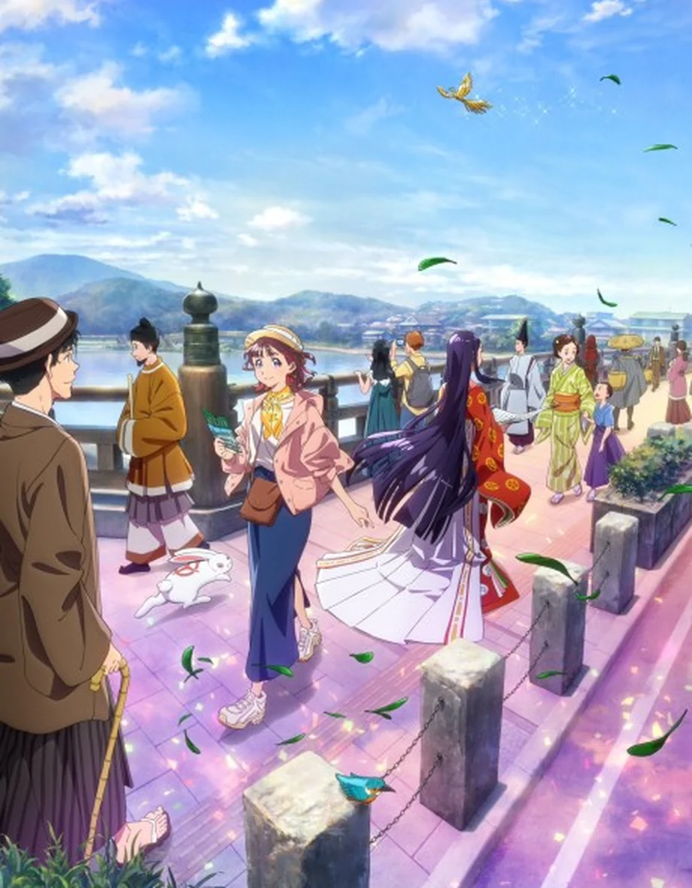

The Studio
把日常，画成会呼吸的光。
从京都府宇治市出发，一家以“人”的笔触与时间感著称的动画工作室。

我们想记录的，不是宏大叙事，而是让日常变得可亲的那些微光。
京都动画（京都アニメーション，Kyoto Animation），被观众亲切地称作“京阿尼”。1981 年创业，1985 年设立公司，工作室坐落于京都府宇治市。
从动画外包与上色工作起步，京阿尼逐渐建立起以作画、背景美术与演出为核心的制作体系。它不急着抵达高潮，更愿意停留在少女抬头看云的瞬间、手指落在乐器上的迟疑、饭桌上还冒着热气的味噌汤。
从《凉宫春日的忧郁》的校园奇想，到《轻音少女》《冰菓》《吹响！上低音号》的青春余韵，再到《声之形》《紫罗兰永恒花园》《利兹与青鸟》的温柔凝视，作品始终在讨论人与人的距离，以及如何重新靠近。
2019 年，工作室经历了沉痛的纵火事件。来自世界各地的支援与花束汇聚京都，而作品中的光也被更多人记住。今天，这里依然以京都为原点，一笔一画地描绘日常的呼吸。
成立年份、法人设立与所在地依据 京都动画官方公司概要；“62”为本页收录的官方已公开动画数量（截至 2025 年），完整清单仍以京都动画官方作品页为准。
Complete Works Archive
所有作品，沿着时间一一展开。
官方作品页收录的 62 部 TV 动画、剧场版与 OVA、短篇。默认按发行年份从新到旧排列，评分默认从高到低；两种排序均可切换升序、降序。每页显示数量可在列表底部调整。点击任意卡片即可查看简介、制作与主要角色。
这一页，暂时没有找到作品。
试试中文名、日文原名、角色名或关键词。也可以清除筛选，重新沿着时间走一遍。
评分来自 Bangumi 番组计划，保留一位小数，统计口径截至 2026 年 10 月；为社区参考值，并非官方评分或实时数据。收录范围为京都动画官方作品页截至 2025 年的 62 部已公开动画；2026 年以后的新作与最新情报请以 官方作品页 为准。真实海报与人物画像版权归各权利人所有。
Character Index / 人物图鉴
那些让我们记住的名字。
从 62 部作品中收拢 Bangumi 标注为“主角”的人物，共 115 位。可按作品筛选或搜索名字。
没有找到这位角色。
试试其他名字，或把作品筛选切回“全部作品”。
人物范围：Bangumi 标注为“主角”的角色；同一角色跨季、剧场版重复出现时只计一次。角色画像来自 AniList / Bangumi，资料参考 Bangumi，版权归原权利人。
A Quiet History
沿着时间，重看光走过的路。
选取工作室里程碑与代表性作品，不是完整年谱。从 1981 年直到今天，京都仍然是这条时间线的原点。
年表条目为本站按公开资料整理的代表性节点；作品播出与上映年份以日本首播／首映为准。